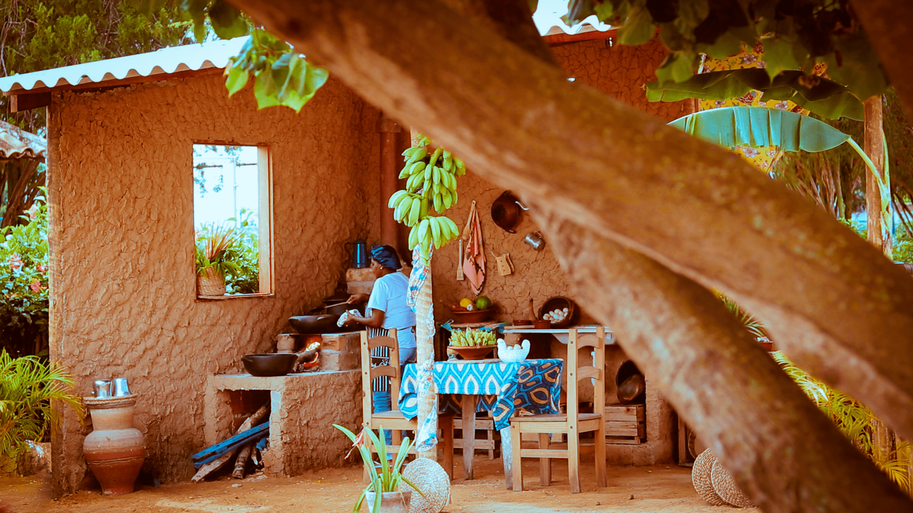
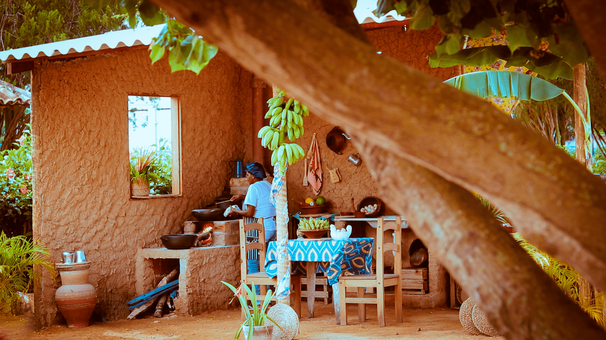
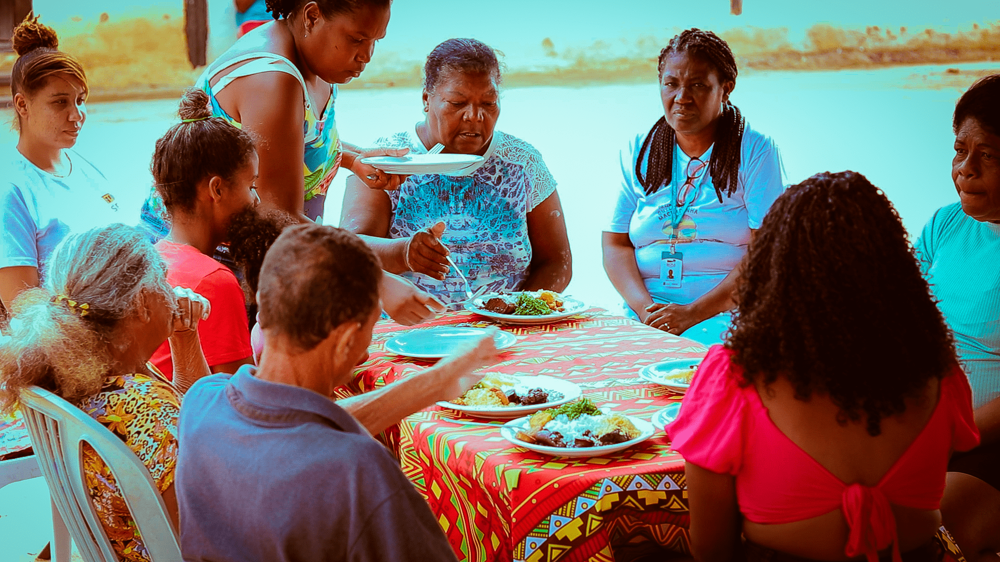
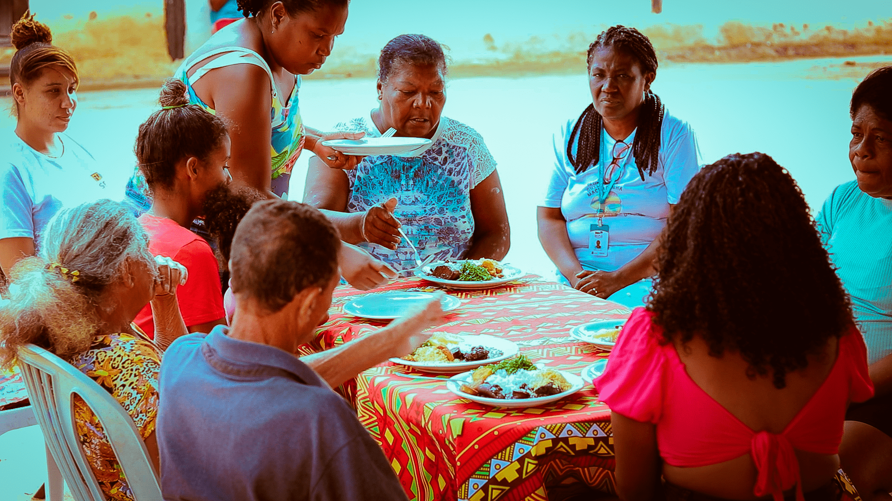

Feijoada
R$ 25
Feijão, couve, lombo, carne seca, pé e orelha de porco, linguiça, costelinha, laranja, banana e farofa.
Sopa de Leite
R$ 10
Leite, farinha de mandioca e carne seca desfiada.
Era feita tradicionalmente por Mãe Preta, que aprendeu a receita com a sua avó. Antigamente os escravizados tinham que comer pouca comida e se fossem avistados comendo carne eram castigados com chibatadas. A carne seca era “escondida” pelas escravizadas ao fundo da travessa, sendo encoberta pela sopa de leite.
Mulato velho
R$ 10
Feijão e abóbora das roças das famílias quilombolas com bagre pescado na Lagoa Feia.
Galinha com Aipim
R$ 25
Galinha da roça e aipim.

 

 
